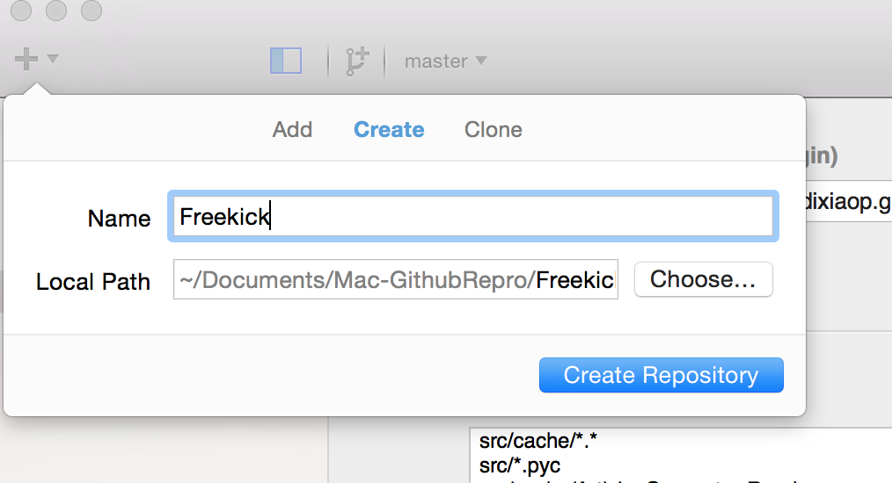

你或许跟我一样，不想花太多时间去"精通"git的各种命令，想用简单明了的方法来玩git。而Github的客户端恰是这种良药。使用过的童鞋可能有过跟我一样困惑：Github客户端在界面上只能管理Github的代码仓库，怎么才能管理非Github的仓库呢？
这个问题也就是本文要解决的内容。先讲Github for Mac, 然后是Github for Windows
Github for Mac
首先创建一个本地的仓库, 假设取名为Freekick

然后把git仓库的https地址设置为Freekick仓库的Primary remote repository。在Settings选项卡中设置。

上一步完成之后点击Updae Remote按钮，之后会弹出输入账号密码的对话框。输入正确的账号密码即可。

然后切换到Changes选项卡，点击右上角的publish按钮。

最后Github for Mac会自动同步仓库。

Github for Windows
在Windows上只需要把git仓库的https地址拖拽到Github for Windows客户端上，然后会弹出对话框。输入正确的账号密码后，Github for Windows会自动同步代码。拖拽的时候最好把浏览器窗户缩小，如下图所示

写在最后
Github客户端不能本地创建新的仓库，然后发布到除Github之外的代码托管服务器上。如果需要新建一个仓库，我们可以先创建好一个空的新仓库，然后再用本文提到的方法来同步仓库来达到目的。
另外，由于Github客户端是为Github量身定做的，当管理非Github仓库时，会有少量跟github相关的功能不能用。但是个人觉得这个不影响体验。我们可以通过下面的地址在官方下载Github客户端：
- Github for Windows: https://windows.github.com/
- Github for Mac: https://mac.github.com/